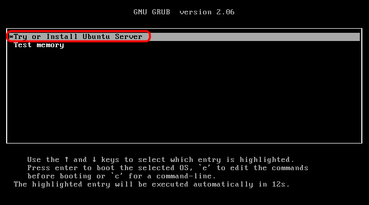
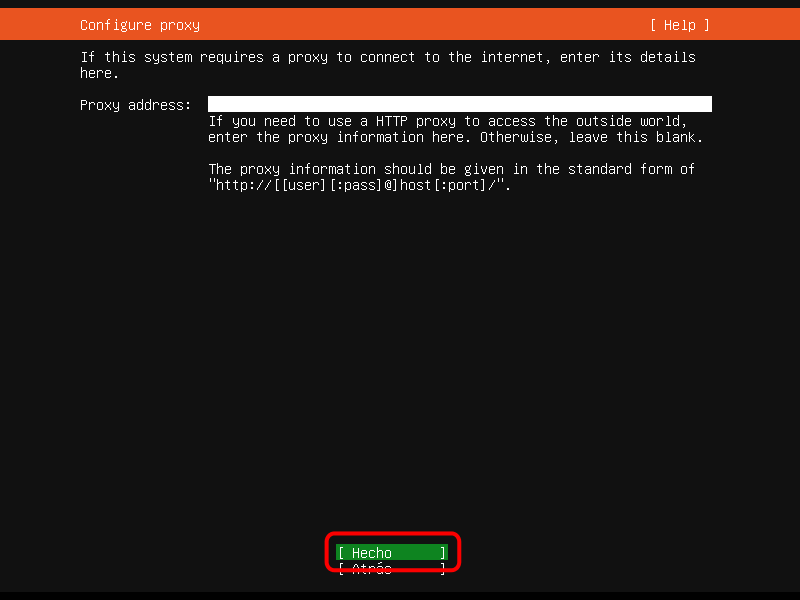

Instalación, paso a paso
Estos son los pasos a realizar para instalar Ubuntu Server 18.04 LTS en una máquina virtual.
Entre corchetes se indica el tiempo que tarda en pasar al paso siguiente una vez elegida la opción correspondiente.
Los cuadros con borde negro contienen las pulsaciones de teclado que se realizan en ese paso de la instalación, que se deben incluir en el constructor de packer de la máquina virtual.
- Elija el idioma español [1 s]:
<down><down><enter><wait5>


- Elija Instalar Ubuntu Server [5 s]:
<enter><wait10>

- Elija la zona horaria [1 s]:
<enter><wait5>

- Elija no detectar la disposición de teclado [1 s]:
<enter><wait5>

- Elija el teclado Spanish [1 s]:
<enter><wait5>

- Elija la distribución de teclado Spanish (Win keys) [50 s]:
<down><down><down><down><down><down><enter><wait60s>


- Escriba el nombre de la máquina (o mantenga el nombre predeterminado ubuntu) [1 s]:
<tab><enter><wait5>


- Escriba el nombre completo del usuario [1 s]:
Bartolome Sintes<tab><wait5><enter><wait5>


- Escriba el nombre de usuario [1 s]:
<bs><bs><bs><bs><tab><wait5><enter><wait5>


- Escriba la contraseña del usuario (en el ejemplo se muestra la contraseña, que coincide con el nombre de usuario) [1 s]:
barto<tab><spacebar><tab><wait5><enter><wait5>


- Repita la contraseña del usuario (en el ejemplo se muestra la contraseña, que coincide con el nombre de usuario) [1 s]:
barto<tab><spacebar><tab><wait5><enter><wait5>


- Si la contraseña es débil (lo que sólo debe ocurrir en instalaciones de prueba), confirme la contraseña [1 s]:
<left><enter><wait5>


- Confirme la zona horaria [7 s]:
<enter><wait10>

- Elija el tipo de particionado (en el ejemplo se elige el disco completo con LVM) [1 s]:
<enter><wait5>

- Elija el disco a particionar [1 s]:
<enter><wait5>

- Guarde los cambios [1 s]:
<tab><enter><wait10>


- Confirme el tamaño del disco [2 s]:
<tab><enter><wait10>


- Guarde los cambios [80 s]:
<tab><enter><wait90s>


- Indique el proxy (en el ejemplo no se usa ninguno) [30 s]:
<tab><enter><wait40s>


- Elija el tipo de actualizaciones (en el ejemplo se elige actualizaciones automáticas) [4 s]:
<down><enter><wait10>

- Seleccione la instalación del servidor OpenSSH [180 s]:
<down><down><down><down><down><down><spacebar><tab><enter><wait3m30s>



- Instale GRUB [25 s]:
<enter><wait40s>

- Una vez completada la instalación, arranque de nuevo el sistema [30 s]:
<enter><wait40s>

- Una vez reiniciado, compruebe que puede entrar con el usuario creado en la instalación (este paso no se realizará durante la creación de la máquina virtual con Packer):